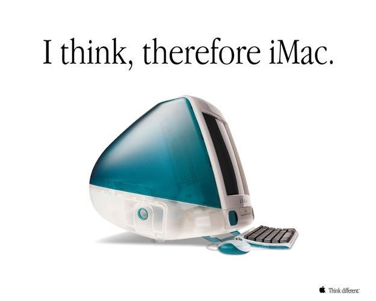

|
This is my first website. I think the internet is going to be the next big thing. We already have these cool "AteMyBalls" comics and every band has a www website. I figured I'd get some experience building my own website so that I can be an awesome web designer one day.
The 90s is a great time to be around. It's almost as cool as the 80s was. There's no telling what the future of the internet will hold, but I hope to be there for it. Still, I think it will be good things. "Out of all the things I've lost. I miss my mind the most" - Ozzy Osborne Oh well. Time for me to bail. C-ya! |
